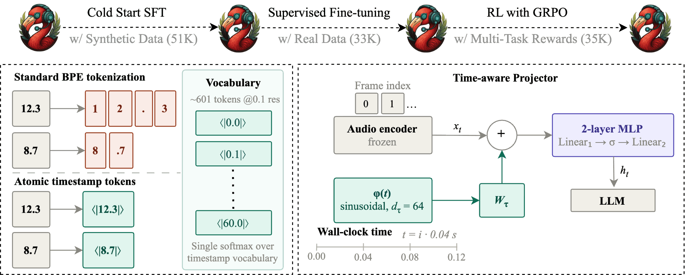
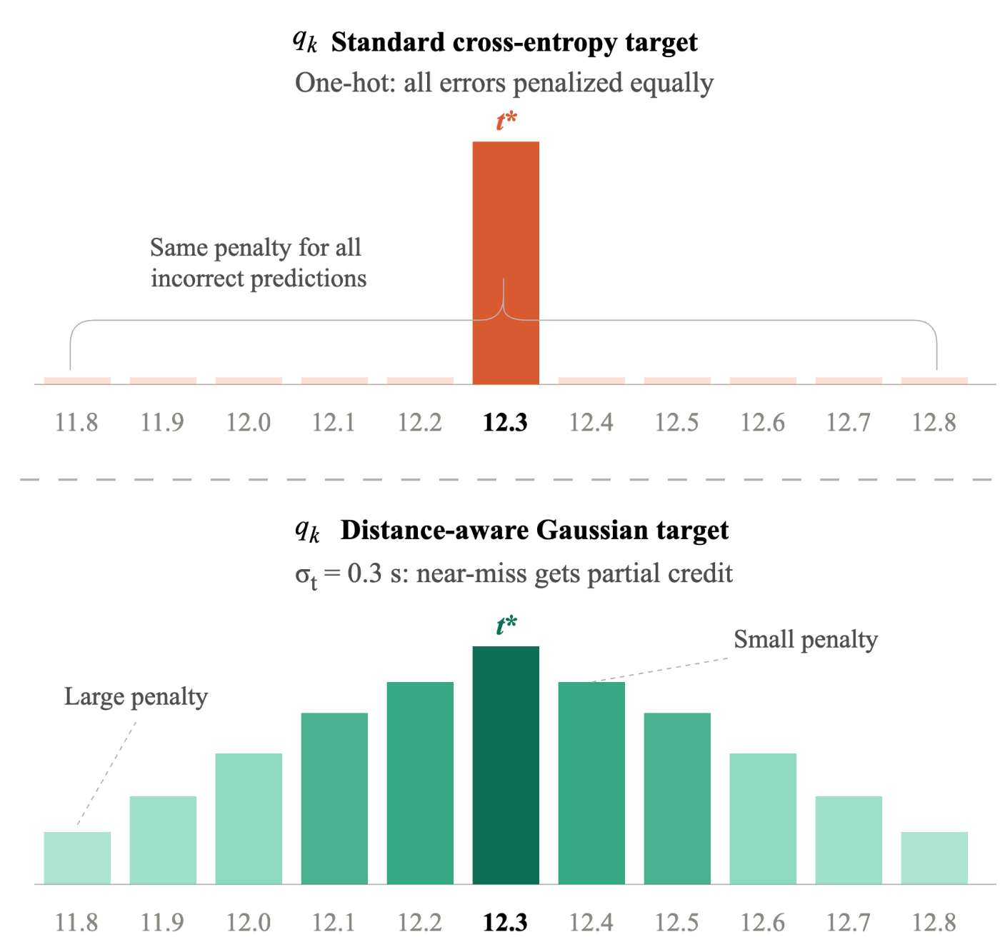

Motivation
Large audio-language models (LALMs) describe audio at the clip level but cannot assign timestamps to the events, speakers, or sounds they identify. Despite being essential for downstream tasks like speech recognition and dense audio captioning, timestamping remains a key limitation of most LALMs.
We present TEMPO (Temporally-grounded Multi-task Post-training), the first unified model to handle audio, speech and music timestamping tasks. Our core contribution is a supervised fine-tuning (SFT) stage built on three innovations: atomic timestamp tokens, a time-aware projector that injects sinusoidal wall-clock encodings into audio frame embeddings, and a distance-aware Gaussian loss, trained under a synthetic-to-real curriculum. We further introduce, to our knowledge, the first application of reinforcement learning to unified audio timestamping, using GRPO with verifiable temporal rewards that directly optimize the evaluation objectives.
To support this work we build a training dataset of 119K samples and an evaluation benchmark of 10K samples, drawn from six established corpora across five tasks.
Five Tasks, One Grammar
TEMPO answers what happens when across speech, sound and music. Every task reduces to the same shape: segment the audio into intervals, then label each one. TEMPO emits them as atomic timestamp tokens, such as <|3.5|>, from a single decoder, switched only by a task tag in the prompt.
- [speech:asr]Multi-speaker ASR. Transcribe overlapping speech and align every utterance to its interval.
- [speech:diar]Speaker diarization. Count the speakers and mark when each one holds the floor.
- [audio:ground]Audio temporal grounding. Localize a natural-language query to the intervals where it occurs.
- [audio:caption]Dense audio captioning. Segment the stream and describe each sound event in place.
- [audio:music]Timestamped music captioning. Emit structured chord, tempo, instrument and note-statistic annotations with times. To our knowledge, this is the first LALM to do so.
Method
TEMPO is built on Audio Flamingo 3: a frozen Whisper-large encoder feeding a Qwen2-7B decoder through a two-layer MLP projector. Teacher-forced cross-entropy alone fails at fine-grained timestamping for three reasons, and our SFT recipe answers each one.

Atomic Timestamp Tokens
BPE shreds numeric times across subword pieces. We add ~601 dedicated tokens <|t|> for t ∈ {0.0 … 60.0} at 0.1 s steps, so predicting a time is one categorical decision rather than a sequence of digit fragments. New embeddings initialize from the mean of the BPE decomposition.
Time-Aware Projector
Encoder features are indexed by frame, not wall clock. We inject fixed sinusoidal encodings φ(t) of elapsed time into each frame embedding (dτ = 64, periods log-spaced from 0.08 s to 60 s), spanning sub-second onsets and long-range musical structure in one projector.
Distance-Aware Gaussian Loss
Cross-entropy treats the timestamp vocabulary as unordered: predicting <|12.4|> for a ground truth of <|12.3|> costs exactly as much as predicting <|48.0|>. Temporal IoU does not. We restore that ordering with a soft target that decays with distance from the true time t*:
The auxiliary term is the cross-entropy of the model’s timestamp distribution p against that soft label, taken over timestamp positions only, and added to the standard token objective so exact hits are still rewarded most while near misses get graded partial credit:
We use σt = 0.3 s and λtime = 0.5 over the 0.1 s grid of ~601 tokens.

Three-Stage Curriculum
Synthetic SFT (51.5K). LibriSpeech + ESC-50 + Slakh mixtures with timestamps balanced uniformly, to establish temporal calibration before real data. 2 epochs, lr 1e-4.
Real-data SFT (32.7K). AMI, ICSI, Switchboard, AudioSet Strong, TACOS and Slakh2100. LoRA r=128, α=256; projector and timestamp embeddings trained directly. 2 epochs, lr 5e-5.
GRPO (35K). Verifiable rewards built from the eval metrics themselves, bounded in [0,1] and gated by a format check. LoRA r=256, 1,000 steps, 8 completions per prompt, β = 0.01.
Results
Against zero-shot LALMs explicitly trained on timestamped data, gains are largest on speech, and on music, where no prior LALM produces structured timestamped chord progressions at all.
| Model | Speech | Sound | Music | ||||||||||||||||
|---|---|---|---|---|---|---|---|---|---|---|---|---|---|---|---|---|---|---|---|
| ASR | Diarization | Dense captioning | Audio grounding | Chord | Instrument | Tempo | |||||||||||||
| MAE↓ | mIoU↑ | WER↓ | DER↓ | mIoU↑ | sF1↑ | eF1↑ | mIoU↑ | MET↑ | F1↑ | MAE↓ | mIoU↑ | Root↑ | Qual↑ | F1↑ | mIoU↑ | F1↑ | MAE↓ | Acc↑ | |
| Zero-shot LALMs | |||||||||||||||||||
| Audio Flamingo 3 | 0.99 | 19.4 | 209.7 | 103.2 | 2.9 | 1.0 | 3.8 | 5.7 | 2.7 | 3.3 | 1.25 | 5.6 | 0.4 | 0.9 | 0.1 | 2.1 | 33.7 | 2.84 | 18.0 |
| Audio Flamingo Next | 1.39 | 11.5 | 115.4 | 106.9 | 12.4 | 7.6 | 11.6 | 22.3 | 11.9 | 3.6 | 0.95 | 7.0 | 0.4 | 1.2 | 0.0 | 3.2 | 33.5 | 2.77 | 26.2 |
| Qwen3-Omni | 1.12 | 31.6 | 69.7 | 44.2 | 44.4 | 31.5 | 57.9 | 65.4 | 19.0 | 47.4 | 1.10 | 49.3 | 1.1 | 2.8 | 0.5 | 6.9 | 25.4 | 2.51 | 40.3 |
| TimeAudio | – | – | – | – | – | – | 43.6 | 64.6 | 19.9 | 40.1 | 1.32 | 46.3 | – | – | – | – | – | – | – |
| Gemini 2.5 Flash | 1.01 | 43.6 | 49.4 | 50.2 | 34.8 | 21.6 | 21.5 | 52.1 | 10.7 | 27.4 | 1.20 | 42.5 | 8.6 | 19.2 | 1.1 | 30.4 | 65.3 | – | 11.2 |
| Gemini 2.5 Pro | 0.99 | 42.2 | 46.9 | 27.6 | 51.7 | 42.0 | 41.5 | 63.4 | 10.7 | 36.9 | 1.09 | 48.7 | 8.8 | 15.5 | 0.8 | 25.0 | 77.4 | 3.03 | 12.9 |
| Task-specific specialists | |||||||||||||||||||
| Specialist systems† | 1.27 | 42.7 | 31.4 | 19.6 | 55.3 | 48.8 | 35.0 | 48.8 | 3.9 | 30.8 | 1.83 | 43.6 | 18.8 | 23.4 | 2.0 | 23.8 | 61.2 | – | 45.0 |
| TEMPO | |||||||||||||||||||
| SFT (naive): Stage 1+2 | 0.84 | 64.0 | 46.0 | 27.4 | 67.2 | 52.3 | 52.4 | 64.5 | 22.7 | 37.1 | 1.44 | 40.3 | 0.3 | 0.3 | 0.3 | 0.3 | 0.5 | 3.95 | 37.8 |
| SFT (ours): Stage 1 | 2.42 | 41.7 | 94.0 | 74.3 | 43.3 | 25.1 | 47.6 | 50.9 | 10.5 | 34.3 | 3.10 | 36.2 | 19.4 | 32.4 | 5.8 | 75.5 | 96.4 | 2.71 | 47.5 |
| SFT (ours): Stage 2 | 0.85 | 64.8 | 47.0 | 25.1 | 70.0 | 54.5 | 55.2 | 67.8 | 20.2 | 44.6 | 1.14 | 44.7 | 17.4 | 31.9 | 4.6 | 76.0 | 89.4 | 2.78 | 41.7 |
| SFT (ours): Stage 1+2 | 0.77 | 63.8 | 44.7 | 25.4 | 70.5 | 54.9 | 58.5 | 68.3 | 22.3 | 46.2 | 1.19 | 48.5 | 19.6 | 32.7 | 6.2 | 76.2 | 96.3 | 2.63 | 47.3 |
| + Single-task RL | 0.84 | 66.1 | 46.7 | 26.8 | 69.2 | 54.0 | 58.6 | 67.8 | 24.4 | 45.5 | 1.21 | 48.0 | 19.0 | 32.2 | 6.0 | 75.5 | 96.3 | 2.63 | 47.0 |
| + Multi-task RL | 0.76 | 65.8 | 43.5 | 25.4 | 71.1 | 56.3 | 59.3 | 68.5 | 23.5 | 46.5 | 1.32 | 49.4 | 18.7 | 31.7 | 5.5 | 75.3 | 96.0 | 2.62 | 46.9 |
What Each Component Buys
To separate the contributions we train four SFT variants on a controlled 2,000-example subset.
| Metric | Naive | + Loss | + Projector | + Both (ours) |
|---|---|---|---|---|
| Diarization DER ↓ | 98.4 | 86.2 | 104.2 | 79.3 |
| Diarization mIoU ↑ | 23.8 | 37.5 | 22.2 | 37.5 |
| Dense captioning eF1 ↑ | 35.3 | 49.9 | 34.2 | 49.7 |
| Audio grounding F1 ↑ | 33.9 | 38.0 | 34.0 | 38.7 |
The distance-aware loss alone carries most of the gain (+14.6 event F1 on dense captioning). The time-aware projector alone does nothing, because wall-clock position needs a matching learning signal, but paired with the loss it adds the last increment where temporal structure is densest: diarization DER 86.2 → 79.3, and grounding MAE 1.73 s → 1.69 s with mIoU 41.9 → 42.5.
Curriculum and RL
The curriculum earns its keep. Synthetic data alone is not enough (94.0 WER, 74.3 DER). Real-data fine-tuning on top of it beats Stage 2 alone on most metrics (0.77 s vs 0.85 s ASR boundary MAE, 70.5 vs 70.0 diarization mIoU), so the synthetic warm-up transfers.
The recipe matters more than the data. Under an identical training budget, the three SFT innovations buy −1.3 WER, −2.0 DER, +6.1 event F1 and +9.1 grounding F1 over naive SFT, and take chord metrics from near-zero to usable.
RL refines, SFT installs. Multi-task GRPO adds consistent but moderate gains (+1.2 WER, +1.4 sF1, +0.8 eF1, +0.9 grounding mIoU) and does not help music captioning. Careful post-training design remains the primary lever.
Real-World Music
Every training corpus is human-annotated audio from real recordings, except music. Slakh2100’s labels come from human-annotated Lakh MIDI, but its audio is synthesized from those MIDI files. To test whether that supervision survives the jump to real acoustics, we evaluate the final checkpoint zero-shot on MAESTRO: real piano recordings with human-annotated MIDI, processed through the same pipeline, split into 30 s intervals, 1,000 sampled segments. No additional fine-tuning.
| Model | Root↑ | Qual↑ | Inst F1↑ | Tempo↑ |
|---|---|---|---|---|
| Audio Flamingo 3 | 0.0 | 0.0 | 98.7 | 19.5 |
| Gemini 2.5 Flash | 9.1 | 22.4 | 96.3 | 17.9 |
| TEMPO (multi-task RL) | 23.9 | 27.3 | 99.8 | 24.8 |
The multi-task RL checkpoint beats base Audio Flamingo 3 and Gemini 2.5 Flash on every metric (chord root accuracy 9.1 → 23.9 and quality 22.4 → 27.3 against the stronger of the two), so chord structure learned from synthesized MIDI does carry over to real instruments, even though absolute accuracy stays well below the in-domain Slakh numbers.
Samples
One held-out evaluation example per task (AMI, TACOS, Slakh2100). The text below each clip is the ground-truth annotation, in the same timestamp-token format TEMPO is trained to output.
[speech:asr] <|0.0|> The memory uh <|2.2|>
[speech:asr] <|3.4|> Pops up the options <|4.5|>
[speech:asr] <|4.9|> Yeah yeah that would be possible yeah sure <|7.1|>
[speech:asr] <|7.5|> I th dont think thats uh that takes a lot of storage space or some just varia variables <|14.0|>
[speech:asr] <|11.7|> No that wouldnt be uh <|12.9|>[speech:diar] <|0.0|> Speaker 1 <|6.2|>
[speech:diar] <|4.6|> Speaker 2 <|6.1|>
[speech:diar] <|5.9|> Speaker 3 <|16.9|>
[speech:diar] <|13.5|> Speaker 1 <|27.9|>
[speech:diar] <|15.9|> Speaker 4 <|16.5|>[audio:caption] <|0.0|> A river flows loudly outdoors. <|23.9|>
[audio:caption] <|0.9|> A bird tweets quietly and repeatedly outdoors. <|1.4|>
[audio:caption] <|2.3|> A bird tweets quietly and repeatedly outdoors. <|2.8|>
[audio:caption] <|3.7|> A bird tweets quietly and repeatedly outdoors. <|4.3|>
[audio:caption] <|5.2|> A bird tweets quietly and repeatedly outdoors. <|5.7|>
[audio:caption] <|6.5|> A bird tweets quietly and repeatedly outdoors. <|7.5|>
[audio:caption] <|8.9|> A bird tweets quietly and repeatedly outdoors. <|12.6|>
[audio:caption] <|13.4|> A bird tweets quietly and repeatedly outdoors. <|13.9|>
[audio:caption] <|15.2|> A bird tweets quietly and repeatedly outdoors. <|15.7|>
[audio:caption] <|16.6|> A bird tweets quietly and repeatedly outdoors. <|19.9|>
[audio:caption] <|20.6|> A bird tweets quietly and repeatedly outdoors. <|21.6|>
[audio:caption] <|22.5|> A bird tweets quietly and repeatedly outdoors. <|23.8|>[audio:ground] <|0.9|> to <|1.4|>
[audio:ground] <|2.3|> to <|2.8|>
[audio:ground] <|3.7|> to <|4.3|>
[audio:ground] <|5.2|> to <|5.7|>
[audio:ground] <|6.5|> to <|7.5|>
[audio:ground] <|8.9|> to <|12.6|>
[audio:ground] <|13.4|> to <|13.9|>
[audio:ground] <|15.2|> to <|15.7|>
[audio:ground] <|16.6|> to <|19.9|>
[audio:ground] <|20.6|> to <|21.6|>
[audio:ground] <|22.5|> to <|23.8|>[instrument] Strings enters at <|0.00|> exits at <|2.07|> [tempo] 102.0 BPM at <|0.00|> [tempo] 98.0 BPM at <|7.50|> [tempo] 94.0 BPM at <|9.00|> [tempo] 90.0 BPM at <|10.00|> [tempo] 84.0 BPM at <|23.50|> [tempo] 78.0 BPM at <|25.00|> [tempo] 72.0 BPM at <|26.50|> [tempo] 66.0 BPM at <|29.50|> [dynamics] f from <|0.00|> to <|0.00|> [dynamics] ff from <|0.00|> to <|0.50|> [dynamics] f from <|0.50|> to <|0.50|> [dynamics] mp from <|0.50|> to <|0.50|> [dynamics] mf from <|0.50|> to <|0.50|> [dynamics] f from <|0.50|> to <|0.50|> [dynamics] ff from <|0.50|> to <|0.50|> [dynamics] f from <|0.50|> to <|0.50|> [dynamics] mp from <|0.50|> to <|0.50|> [dynamics] p from <|0.50|> to <|1.00|> [dynamics] mf from <|1.00|> to <|1.00|> [dynamics] f from <|1.00|> to <|1.00|> [dynamics] mf from <|1.00|> to <|1.00|> [dynamics] p from <|1.00|> to <|1.00|> [dynamics] mp from <|1.00|> to <|1.00|> [dynamics] mf from <|1.00|> to <|1.00|> [dynamics] f from <|1.00|> to <|1.50|> [dynamics] mf from <|1.50|> to <|1.50|> [dynamics] p from <|1.50|> to <|1.50|> [dynamics] mf from <|1.50|> to <|1.50|> [dynamics] mp from <|1.50|> to <|1.50|> [dynamics] mf from <|1.50|> to <|1.50|> [dynamics] f from <|1.50|> to <|1.50|> [dynamics] ff from <|1.50|> to <|2.00|> [dynamics] f from <|2.00|> to <|2.00|> [dynamics] mf from <|2.00|> to <|2.00|> [dynamics] ff from <|2.00|> to <|2.00|> [dynamics] mf from <|2.00|> to <|2.00|> [dynamics] mp from <|2.00|> to <|2.00|> [dynamics] p from <|2.00|> to <|2.50|> [dynamics] mp from <|2.50|> to <|2.50|> [dynamics] p from <|2.50|> to <|2.50|> [dynamics] pp from <|2.50|> to <|3.00|> [dynamics] ppp from <|3.00|> to <|3.00|> [dynamics] pp from <|3.00|> to <|3.00|> [dynamics] ppp from <|3.00|> to <|30.00|> [chord] C#:dom7 from <|0.00|> to <|0.50|> [chord] A:maj7 from <|0.50|> to <|1.00|> [chord] A:maj from <|1.00|> to <|1.50|> [chord] G#:min from <|1.50|> to <|2.00|> [chord] F#:min from <|2.00|> to <|2.50|> [chord] F#:sus2 from <|2.50|> to <|3.00|> [chord] F#:min from <|3.00|> to <|3.50|> [chord] F#:min from <|3.50|> to <|4.50|> [chord] G#:min7 from <|4.50|> to <|5.00|> [chord] D:maj from <|5.00|> to <|5.50|> [chord] G:maj7 from <|5.50|> to <|6.00|> [chord] D:maj7 from <|6.00|> to <|6.50|> [chord] F:hdim7 from <|6.50|> to <|7.00|> [chord] A:sus2 from <|7.00|> to <|7.50|> [chord] C#:maj7 from <|7.50|> to <|8.00|> [chord] F:hdim7 from <|8.00|> to <|8.50|> [chord] B:hdim7 from <|8.50|> to <|9.00|> [chord] D#:maj7 from <|9.00|> to <|9.50|> [chord] G:hdim7 from <|9.50|> to <|10.00|> [chord] C#:maj7 from <|10.00|> to <|10.50|> [chord] G#:hdim7 from <|10.50|> to <|11.00|> [stats] Note density: 0.4 notes/sec, range: C#4 to C#5Takeaways
-
Timestamping is a post-training problem, not an architecture problem. A frozen Whisper encoder and an off-the-shelf Qwen2-7B decoder are enough; what they need is a time-aware interface and a loss that knows time is ordered.
-
Give time its own tokens. Predicting a timestamp should be one categorical decision, not a walk through BPE digit fragments. Atomic
<|t|>tokens at 0.1 s resolution make that possible. -
The loss carries the gain; the projector needs a partner. The distance-aware Gaussian loss alone accounts for most of the ablation improvement. The time-aware projector alone does nothing: wall-clock position only helps once a loss rewards getting close.
-
One decoder handles all five tasks. Speech, sound and music timestamping share a single output grammar, switched only by a task tag, including structured chord and tempo annotation, which no prior LALM produces.
-
RL refines, SFT installs. GRPO with verifiable temporal rewards gives consistent but moderate gains on top of the SFT checkpoint. It is a refinement stage, not the source of the capability.
Citation
@misc{kulkarni2026tempo,
title={TEMPO: Temporally-grounded Multi-task Post-training for Large Audio-Language Models},
author={Apoorva Kulkarni and Kaousheik Jayakumar and Sreyan Ghosh and Utathya Aich and Ramani Duraiswami and Dinesh Manocha},
year={2026},
eprint={2608.29999},
archivePrefix={arXiv},
primaryClass={eess.AS},
url={https://arxiv.org/abs/2608.29999},
}